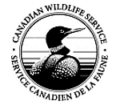

Work Term 3

Introduction
My third co-op work term took place at the National Wildlife Research Centre in Ottawa, ON. Here, I was an employee of Environment and Climate Change Canada - Canadian Wildlife Service. This was actually a position I had heard about indirectly from my previous co-op work terms with Dr. Daniel Gillis and Dr. Shoshanah Jacobs, and this work term proved to be another “game changer” in how my undergraduate career trajectory was shaped.
About the Employer

Environment and Climate Change Canada (ECCC) is a branch of the Canadian government that deals with all aspects of the environment, including weather, harvesting, waste, and species at risk. One of the divisions of ECCC is the Canadian Wildlife Service (CWS), which is the division that specifically deals with harvesting animals and managing and conservation species at risk.
One of the major projects that CWS oversees (in conjunction with the United States Geological Survey, USGS) is the North American Breeding Bird Survey (BBS). The BBS is a long-running program that aims to model population trajectories of the birds of North America. Dr. Adam Smith, the senior biostatistician at CWS, works with folks at the USGS to develop sophisticated Bayesian models to make predictions about the trends of various bird species over the next decade. Dr. Smith’s field of biostatistics (especially as it pertains to birds) was of great interest to me, which pushed me to pursue a co-op work term at CWS.
Job Description
Dr. Smith and I communicated back and forth over the months leading up the work-term. He identified several projects that he either led or was involved with that might be of interest to me. In the end, we settled on a project that would have me developing and testing a new type of model for for BBS data. I would be investigating the use of a Bayesian Generalized Additive Model (GAM), and that investigation would see me gain experience using probabilistic programming languages such as JAGS and would also have me gain a large amount of experience in the world of Bayesian modelling.
Additionally, roughly a month into the work-term, I approached Dr. Smith with a second project that I was willing to take the lead on which involved the development of an R package to allow other researchers to perform their own BBS analyses. This happened to be something Dr. Smith was interested in doing for a while but hadn’t had the time to do, so I was able to take the lead on a project of my own design.
Goals
Bayesian Modelling
The main theme of this co-op work term was Bayesian modelling, so three out of five work term goals encompassed distinct areas of Bayesian modelling that I was looking to learn.
Motivation
One of the first major areas of Bayesian modelling I had to gain experience in was the background information and motivation surrounding Bayesian modelling and Bayesian statistics. In most undergraduate courses, Bayesian statistics is only touched on briefly in upper year courses, so this was very much a self guided process. Dr. Smith was kind enough to lend me some valuable resources for the summer for me to references, including books and papers by Andrew Gelman, a prominant researcher in Bayesian modelling.
For a given data set or problem, accomplishing this goal would mean I would be able to explain and defend the use of Bayesian data analysis to analyse the data at hand.
Mathematics
Bayesian statistics is rooted heavily in assumptions made regarding the distribution of data. Without going into too much “mathy” detail, Bayesian modelling, in a sense, looks to combine these distributions from all covariates of a given dataset into one new distribution that the response variable takes on. This allows the researcher to make more intuitive statements about the response, such as “we are 95% certain that the response lies between x and y”.
With all this in mind, referencng the resources that Dr. Smith lent me allowed me to gain a deeper understanding the mathematics behind finding this joint distribution and the underlying assumptions needed to find this distribution.
Computational Techniques
Bayesian modelling requires a lot more computational background and ability than traditional least squares regression. For example, one needs to know probabilistic programming languages such as JAGS or Stan and how to call these languages through R, and one needs to know some basics of the computation of Markov Chains. Again, through the resources Dr. Smith lent me for the summer, I was able to work through some examples in the books to gain a sense of how Bayesian models should be coded in JAGS and how to properly use R as an interface to call and run these models.
Understandng Data
The BBS data set is an absolutely enormous data set, consisting of close to 7 million data points across over 40 potential covariates. As such, improving my quantitative literacy was crucial in being able to fully understand how I might be able to develop models to make meaningful statements about the data. With this, I actively researched how BBS data was collected (especially how it’s collected in the field) and processed at USGS offices. Knowing this background information on the data also allowed me to achieve some checkpoints in my Bayesian Modelling goals as it helped me think about what distributions some covariates may come from.
R Package Development
This was probably my most ambitious goal for this workterm, but one that I felt tied all my other goals together. Wrting an R package would require me to have a thorough understanding the Bayesian mathematics and computation techniques needed for BBS analysis, as well as a thorough understanding of the data itself. Through this, I was able to create an R package that allows a researcher to download and prepare raw BBS data, as well as model and analyze this data.
This goal also allowed me to gain experience with software development for an end-user, something that, being in a computer science program (compared to software engineering) I did not have much experience with before.
Academic Relation
This work term was most related to my statistics minor and ecology “interest”, but many foundational computer science courses came into play.
Computer Science
Object-oriented programming (CIS*2430) and Data Structures (CIS*2520) were the most useful classes for this work term. Principles of OOP were explored heavily in the development of the R package, especially when it comes to manipulating large classes of, say, MCMC objects. Further, R has several different “environments” that are available to either the user, the package, or both, that had to be carefully manipulated, so my background with OOP served me well for that portion of the package design. Data structures was useful
Statistics
As mentioned, this work term more directly related to my courses in statistics, especially Introductory Mathematical Statistics II (STAT*3110) and Linear Algebra I (MATH*1160). Bayesian statistics was a small portion of STAT*3110, but ended up playing a large role in at least providing me some very high-level background information about how prior and posterior distributions are related to each other. Further, that course had heavy content on distributions and how to derive them, so this was a rather important concept in decding on prior distributions for parameters. MATH*1160 played a key role in developing and understanding the GAM basis function for the GAM model. Although the linear algebra needed for the GAM basis function was beyond the scope of MATH*1160, I still had some of the tools and background knowledge needed to research more advanced topics such as Singular Value Decomposition and Outer Products.
Ecology
After my previous work terms, I aimed to make my undergraduate more of a “computational ecology” major. This work term allowed me to explore concepts that I learned in Ecology (BIOL*2060) and Populations, Communities, and Ecosystems (BIOL*3060).
Opportunities
International Ornithological Congress 2018
Once again, I had the opportunity to participate in a large conference related to research I was interested in. This time, the conference was the 2018 International Ornithological Congress which took place in Vancouver, BC. This was a gathering of ornithologists from all around the world to present their research.
For this conference, I was able to participate in three separate presentations. The first one actually was related to work done by my previous co-op which I presented at the concurrent Waterbirds Society meeting. Then, I was accepted to present a lightning talk at the Society of Canadian Ornithologists/Societie des ornithologistes du Canada Early Career Researchers workshop. A lightning talk is a talk that can be a maximum of 5 minutes, so it was a very interesting opportunity to improve my scientific communication skills to provide a succinct summary of my research. For the lightning talk, I presented an early view of the R package bbsBayes.
Finally, I presented a poster at the main poster session of the IOC, where I was able to network with hundreds of researchers that were interested in my background of computer science and statistics and how I’m applying that to ornithology. The poster I presented was related to the development of the Bayesian GAM model and some of the rather interesting results that came from it.
Government Lab Work
One of the more unique experiences from this co-op was the opportunity to work in a government lab as a public servant. There were a variety of similarities and differences between government reserach and research in an institution setting such as a University. However, the opportunity to work in a government lab opened the doors to possible jobs at the National Wildlife Research Centre in the future.
Research Papers
One primary goal that I did not list on my co-op work term goals was to produce another academic paper based on the research I would be doing over the summer. At this point, it appears that I will actually be able to be involved with 2 papers, one that I will be a primary author of. The first paper (that I will be primary author of) will be a software paper fully describing bbsBayes and giving a worked example of how to use it. The second paper relates to the results of the Bayesian GAM and what implications the use of it could have for future BBS analyses. Both these papers allowed me a unique chance to co-author with scientists that I have followed for the last few years, and it was a great experience to see how their academic process worked.
Future Work
This co-op work term opened up the doors for some potential future collaborations or work at the National Wildlife Research Centre with Dr. Smith. One opportunity that is quickly approaching is graduate school, and since Dr. Smith is an adjunct professor at Carleton University, he has the ability to be a co-supervisor for grad studies. Further, since Dr. Smith does close work with USGS, this allows me to potentially gain contacts there for future work or reserach collaborations.
Conclusion
This work-term provided me the opportunity to work in a field that is directly related to my interest of quantitative ecology. Prior to the work term, I didn’t realize that I would be working with scientists that directly create important reports such as the State of the Birds of North America, or scientists directly involved with species at risk policy. Working closely with these scientists allowed me to gain a great perspective of all the things that go into natural resource policy, especially from a quantitative side.
As of this work term, bbsBayes is quickly approaching beta testing for the general public to test the package. Dr. Smith and I plan on releasing a full version of the package near the end of 2018. This also means that I will be able to publish the software paper related to the package.
Finally, one of the major things this position allowed me to accomplish was to solidify my decision to switch majors. Prior to this work term, I had contemplated switching out of Computer Science and into Mathematical Science to pursue a more statistics-oriented undergraduate course. With the math-heavy work that this job provided me, I realized how much I enjoyed doing statistics, and it fully backed up my choice to switch out of computer science and into statistics.
With that in mind, that means that this will actually be my last co-op work term report, as the Mathematical Science major at Guelph does not have co-op. Despite that, the opportunities that co-op has offered me has fully shaped my undergraduate career trajectory into something completely relevent to the fields of work I want to get into. Despite losing co-op, I know I will gain the necessary skills I need in the Math Science major to evenutally succeed in a quantitative ecology field.
Acknowledgements
Thank you, Dr. Adam Smith, for the amazing work term! I could not have asked for a better experience at NWRC. Thank you trusting in me to take on not one, but two major projects over the course of a summer, and trusting that I will succeed in both. I look forward to future collaborations with you!
I thank the thousands of skilled volunteers who have contributed to the Breeding Bird Survey over the years, as well as those who have served as provincial and territorial coordinators.
I acknowledge that the National Wildlife Research Centre resides on the traditional and unceded territory of the Algonquin nation.